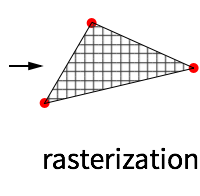

3D on the Web
Created by Denis Grigor
What is 3D?

There is no spoon 3D on a screen
All you see is just an illusion a projection.
- from of an imagined 3D content
- to a 2D array of pixels
An Ancient Renderer [1525]
from Computer Graphics: Principles and Practice, Third Edition
We could do that before?
GPU for the Web.
- Meant for browsers
- OpenGL ES2.0 port built into the <canvas> DOM element
Nicely supported by (almost) all players.
WebGL
programmable
graphics pipeline


WebGL 101
Setting up the scene with a canvas and a background
WebGL output
//2D points with direct screen coordinates
var vertices = new Float32Array([
0, 0.9,
0.9, -0.6,
-0.9, -0.6
]);
Vertex Shader
// vertex shader
var vertexShader = gl.createShader(gl.VERTEX_SHADER);
gl.shaderSource(vertexShader, [
'attribute vec2 position;', // pass in attribute
'void main() {', // every shader needs a main func
'gl_Position = vec4(position, 0.1, 1.0);', // set a position
'}'
].join('\n'));
gl.compileShader(vertexShader);Fragment Shader
// fragment shader
var fragmentShader = gl.createShader(gl.FRAGMENT_SHADER);
gl.shaderSource(fragmentShader, [
'precision highp float;',
'uniform vec4 color;',
'void main() {',
'gl_FragColor = color;',
'}'
].join('\n'));
gl.compileShader(fragmentShader);Bind the shaders together, draw vertices etc
var program = gl.createProgram();
gl.attachShader(program, vertexShader);
gl.attachShader(program, fragmentShader);
gl.linkProgram(program);
var vertices = new Float32Array([
0, 0.9,
0.9, -0.6,
-0.9, -0.6
]);
var buffer = gl.createBuffer();
gl.bindBuffer(gl.ARRAY_BUFFER, buffer);
gl.bufferData(gl.ARRAY_BUFFER,new Float32Array(vertices),gl.STATIC_DRAW);
gl.useProgram(program);
program.color = gl.getUniformLocation(program, 'color');
gl.uniform4fv(program.color, [0, 0, 0, 1.0]);
program.position = gl.getAttribLocation(program, 'position');
gl.enableVertexAttribArray(program.position);
gl.vertexAttribPointer(program.position, 2, gl.FLOAT, false, 0, 0);
gl.drawArrays(gl.TRIANGLES, 0, vertices.length / 2);Just 99.9 lines of code!
Is it an overkill?
Remeber the programmable
graphics pipeline?
WebGL based tools
three.js
Abstracts away triangles and related complexities of GL programming
Into actual objects and things in space
var cylinder = new THREE.Mesh(
new THREE.CylinderGeometry( 100, 100, 200, 32 ),
new THREE.MeshBasicMaterial( {color: 0x2194ce} )
);Getting Started
- scene, camera, renderer, controls
- put stuff in the scene
- animate
setup();
fillScene();
animate();function setup(){
scene = new THREE.Scene();
camera = new THREE.PerspectiveCamera( 45,
window.innerWidth / window.innerHeight,
0.1, 1000 );
renderer = new THREE.WebGLRenderer({alpha:true});
var intro_place = document.getElementById("three_js_101");
intro_place.appendChild( renderer.domElement );
renderer.setSize(400,200);
}function fillScene() {
var material = new THREE.MeshBasicMaterial( { color: 0x3166bc,
wireframe: true } );
var geometry = new THREE.IcosahedronGeometry(20, 4);
sphere = new THREE.Mesh(geometry, material);
scene.add(sphere);
camera.position.z = 60;
camera.lookAt(new THREE.Vector3(0,0,0));
}Animate
- requestAnimationFrame();
- Computer rendered animation needs to be 60fps to be seamless for human eye (contrary to 24fps for film)
-
Call
animate()every time browser refreshes
function animate() {
sphere.rotation.y += 0.01;
requestAnimationFrame( animate );
renderer.render( scene, camera );
}Easily add controls
var controls = THREE.OrbitControls(camera, renderer.domElement);
}What about material?
var material = new THREE.MeshBasicMaterial( { color: 0x3166bc,
wireframe: true } );
}vertex_shader = `
varying vec2 vUv;
void main()
{
vUv = uv;
gl_Position = projectionMatrix*modelViewMatrix*vec4(position, 1.0);
}`
fragment_shader = `
varying vec2 vUv;
void main()
{
gl_FragColor = vec4( vec3( vUv, 0. ), 1. );
}`
var material = new THREE.ShaderMaterial( {
vertexShader: vertex_shader,
fragmentShader: fragment_shader, wireframe: true});
All you need is love three.js
- support for primitive geometries
- available loaders for different formats
- support for lights and shadows
- support for textures
- shader access !!!
What it takes to create a 3D viewer?
Pseudocode for creating cool things
Let us see some cool things!
Sketchfab
"Customizable shopping"
and some even more useful things
 |
 |
 |
|---|---|---|
| What Amazon could look like with 3D | How a realtor website could look with 3D | How an assembly instruction could look with 3D |